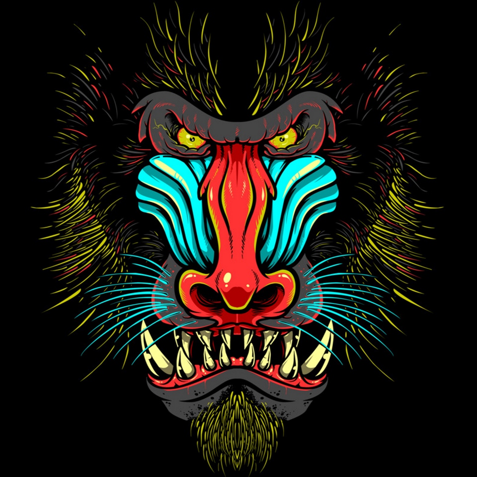
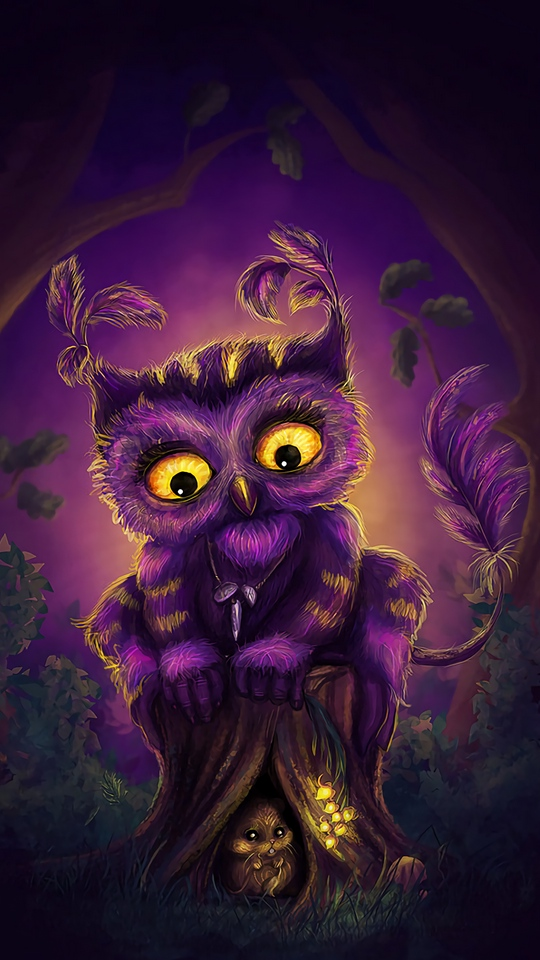

kissMonnus is the hottest Novel web out there with more than 30000
Novils published and day to day realises and updates
from our best translaters,different
genra, action, drama, rommance, generic, Horrer and many more.



!How Novels are writen
Light novels rely heavily on dialogue, so look at quotes from the characters,
and get a feel for the characters' speaking styles. However, keep in mind what
kind of audience you want your book to appeal to.
If your audience is Western, don't spend your whole time writing just dialogue and no description.
The term "light novel" is a wasei-eigo, or a Japanese term formed from words in the English language.
Light novels are often called ranobe or, in English, LN.
A distinguishing characteristic of light novels is that
they are illustrated with an anime or manga art style and are often adapted into such media.
Character Visuals: Contrary to what you may think, Light Novels do have pictures.
Both on the cover and in thtoe form of several splash-page illustrations dotting each volume.However,
in most cases this only happens after all the "novel material" got used up (see also "plot").
one of ower best in colaborations are fandomthere are over millions people who join in dicusion about novels, to be upto date about the trends the world
a list of top novel sits out there
- vipnovel.com
- Readnovelfull.com
- Webbovel.com
- Listnovel.com